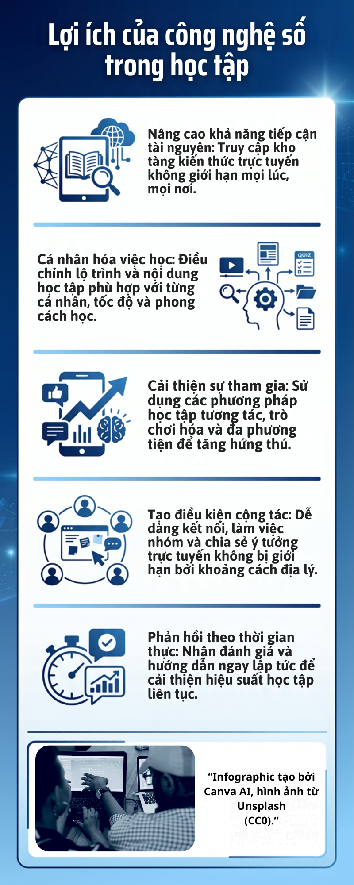

Infographic
Infographic giới thiệu những cách công nghệ số hỗ trợ việc học tập hiệu quả hơn.

Tài liệu PDF
Tài liệu về ứng dụng công nghệ số trong học tập.
Video YouTube
Video được nhúng trực tiếp từ YouTube để người xem có thể theo dõi ngay trên trang.